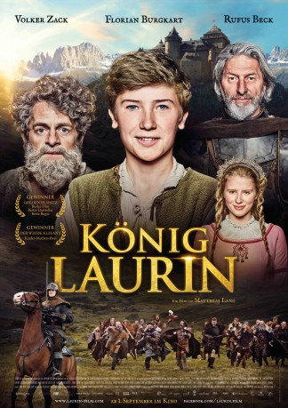

#10568 König Laurin
 
 IMDB-Wertung: 6.4 / 10
IMDB-Wertung: 6.4 / 10  Metascore: 0
Metascore: 0 
Theo, the son of king Dietrich tries to become stronger for the upcoming tournament, but lacks the strength and size. Meanwhile his cousin Wittich tries to gather coin to pay a horde of mercenaries to attack the the castle of king Dietrich. Theo befriends the used to be king Laurin, a dwarf who was exiled from the kingdom by king Dietrich and now lives in a cave tending to his plants. With the Laurin's artifacts and knowledge Theo might be able to win the tournament and save the kingdom.
Jahr: 2016
Dauer: 79 Minuten
FSK: 0
Land: Deutschland Studio: Sparkling PicturesTonspuren:
Untertitel:
Auflösung: 720p (1280x532) Größe: 1515 MB
Genre: Fantasy
Regisseur: Matthias Lang
Drehbuch: Iris Fedrizzi, Matthias Lang
Soundtrack: David Reichelt
Darsteller:
 Rufus Beck als König Dietrich
Rufus Beck als König Dietrich- Andreas Hartner als Honigverkäufer
 Michael Kranz als Bauer Hans
Michael Kranz als Bauer Hans Volker Michalowski als König Laurin
Volker Michalowski als König Laurin Patrick Mölleken als Wittich
Patrick Mölleken als Wittich- Katharina Stark als Similde
- Gregor Bloéb als Armelitenführer
- Florian Burgkart als Theo
- Antonio Caula als Wittich jung
- Ruth Dellago als Kundin
- Luise Deschauer als Oma Sigurta
- Maximilian Diehle als Crassus
- Rosi Eder als Kundin
- Horst Herrmann als Quirliger Kauz
- Dietmar Huhn als Meister Hildebrand
- Georg Kaser als Harald der Herold
- Peter Mitterrutzner als Opi
- Philip Mur als Stultus
- Berit Möller als Kundin
- Alessio Nalesini als Leonardo Da Vinci
- Patrick Pertoll als Metzger
- Joachim Raaf als Wolfram
- Kiki Rochelt als Gräfin Siglinde
- Maximilian Schafroth als Bauer Hubert
- Leo Seppi als Theo jung
- Martin Thaler als Graf Sigurt
- Stefanie von Poser als Königin Dorothea
Datei: X:\2016(G-M)\König Laurin (2016, FSK0, 1280x532).mkv seit 21.01.2019
Festplatte: HD 2016(A-Z)
 Es gibt insgesamt 164 Filme in der Gruppe '2016(G-M)'
Es gibt insgesamt 164 Filme in der Gruppe '2016(G-M)'